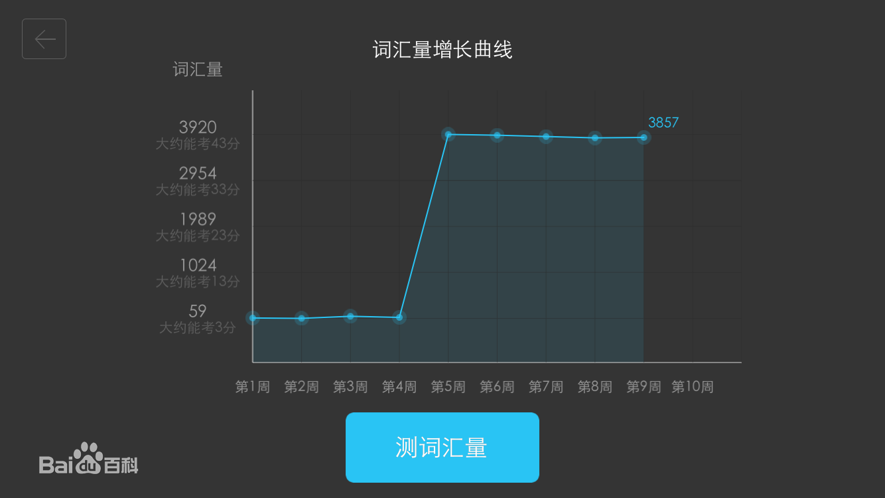

离线词典
电脑没联网，可以用百词斩吗？可以！ 下载此版本百词斩时，已经同时下载了英汉/汉英的词库，包含百万词条，可以满足基本查词需求。
浏览器划译
取词划译很好用，但新的浏览器支持吗？支持！本版本全面支持IE9，Firefox9+，Chrome16+等最新浏览器。另外可以在PDF文件中的取词。独家的译中译功能，支持在取词划译框里再取词翻译，更便捷！
权威词典
软件查词不如纸质词典准确？该版本包含147本版权词典，这些词典的纸质版总价值超过3000元！涵盖金融/法律/医学等多行业，80万专业词条。相当于您随身携带一书柜的词典哦！
真人语音
机器发音太生硬，想找老外来教我。32万纯正英式、美式真人语音，特别针对长词、难词和词组。 另外还有强大TTS，中英文的句子都可以读！
情景例句
要说英语的各种场景，百词斩集合了17种情景，上千组对话，通过搜索快速匹配最合适的情景表达。闲暇时，您还可以用它来学英语。出国游、外企面试、与老外聊天…都搞定！
汉语词典
遇到中文生僻字，百词斩也可以帮我吗？百词斩内置超强悍汉语词典，从生僻字到流行语，发音、部首它全知道，还有笔画写字教学哦！对于诗词、成语、名言等，可以一键查阅经典出处。教您更懂中文！
手机平台特色
-情景对话 -本地词典 -整句翻译 -中文百科 -记事本 -每日热词 -每日资讯百词斩是中国市场占有率最高的翻译软件，拥有超过3000万用户,金山百词斩 4.0 提供海量词典、真人发音、整句翻译、情景会话等功能,为您提供卓越的翻译体验。
百词斩移动版——软件特点：
1.时尚UI设计，打造最强用户体验：此次UI改版，使用清新的六宫格模式，各个功能点一目了然，让您在使用时不再困惑。
2.智能语音识别，边说边查：新加入的语音识别功能提供三种输入方式，您可以说出英文单词的读音或字母拼写，手机词霸能够快速识别并帮您完成查询。
3.开放的外挂词典下载，本地功能更强大：通过全新的资料中心功能，您可以量身定制属于自己的词典。而这些强大的词库资料全部是免费的。
4.更贴心的基本词典：释义、音标、发音、变形词、同反义词、搭配全面收录。
5.全面收录《柯林斯COBUILD高阶英汉双解学习词典》：权威学习型词典。集英汉、英英、例句于一体，内容精选于43亿词语、口语和书面语并重的语料库。
6.随身携带的单词本：如果您要准备考试，需要背诵大量的单词，那么新版词霸的生词本功能一定会帮助您。这里提供了贴心的排序、遮盖释义功能。不仅如此，词霸还可以帮您把生词数据在PC/网站/手机间实现同步，让您随时随地管理自己的生词。
7.全新改版资讯页，带图的每日系列:新版词霸在提供查词服务的同时，还提供精彩的双语阅读内容。包括“每日一句”“双语资讯”“情景会话”，每一块内容都是经过精挑细选，让您在英语学习的同时找到一份乐趣。
8.引进百度专业翻译引擎，长文本翻译一键搞定:如同PC上的翻译引擎一样，在手机上，您一样可以体验到同等质量的翻译效果。如果您经常阅读英文文件或是需要翻译短信、邮件等，翻译功能将是您最好的帮手。
